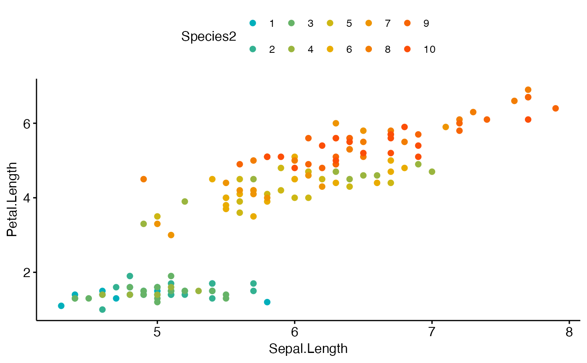
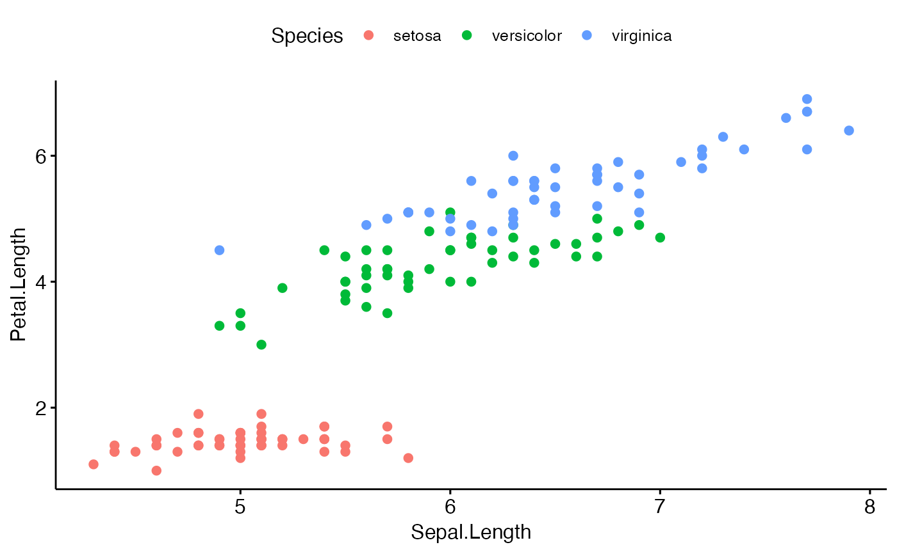
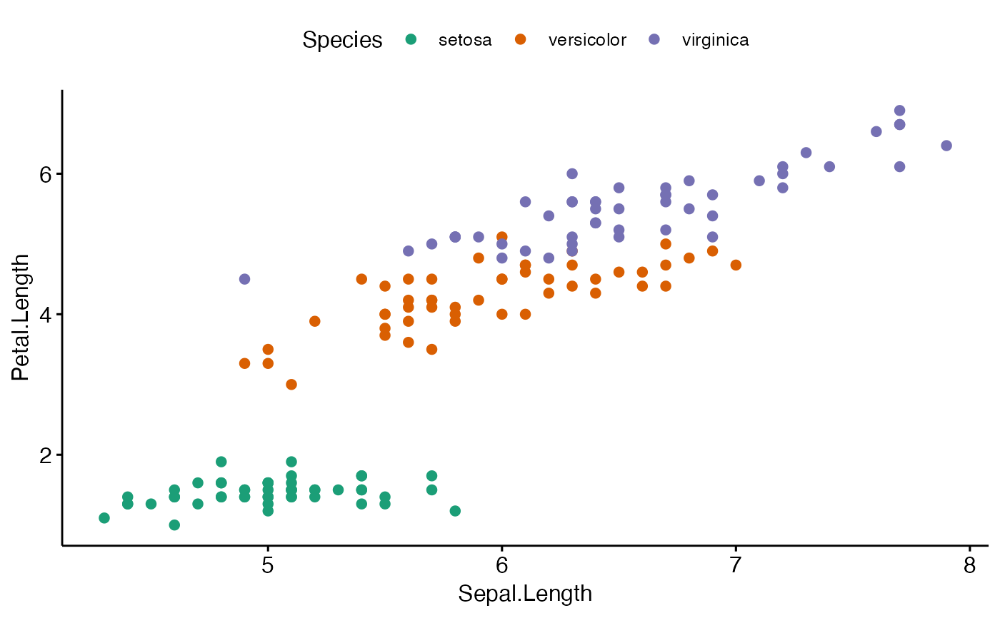
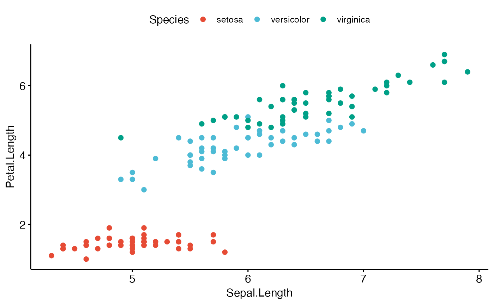
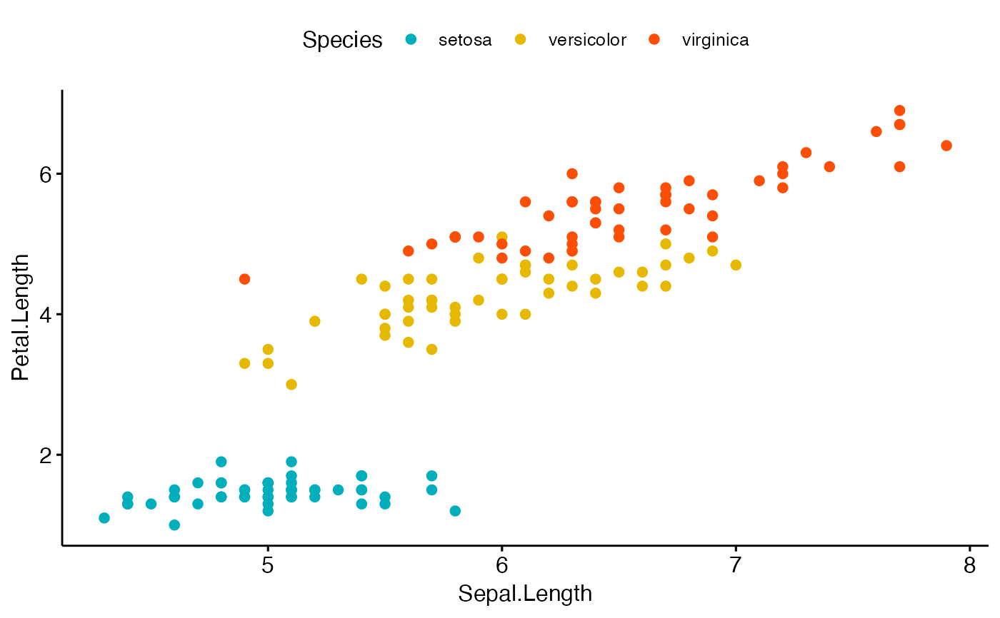
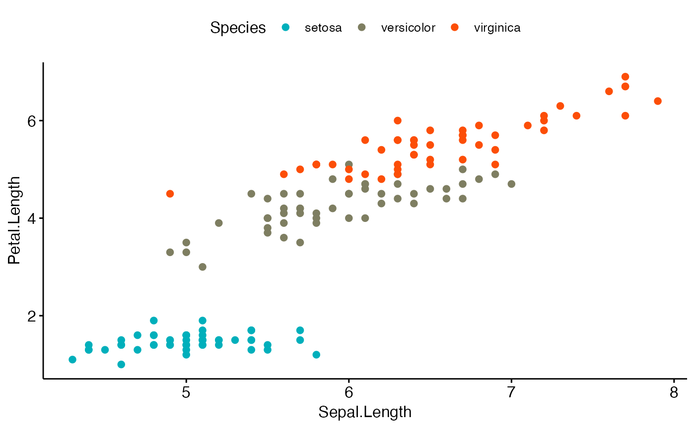

Generate a palette of k colors from ggsci palettes, RColorbrewer palettes and custom color palettes. Useful to extend RColorBrewer and ggsci to support more colors.
Arguments
- palette
Color palette. Allowed values include:
Grey color palettes: "grey" or "gray";
RColorBrewer palettes, see
brewer.paland details section. Examples of palette names include: "RdBu", "Blues", "Dark2", "Set2", ...;Custom color palettes. For example, palette = c("#00AFBB", "#E7B800", "#FC4E07");
ggsci scientific journal palettes, e.g.: "npg", "aaas", "lancet", "jco", "ucscgb", "uchicago", "simpsons" and "rickandmorty".
- k
the number of colors to generate.
Details
RColorBrewer palettes: To display all available color palettes, type this in R:RColorBrewer::display.brewer.all(). Color palette names include:
Sequential palettes, suited to ordered data that progress from low to high. Palette names include: Blues BuGn BuPu GnBu Greens Greys Oranges OrRd PuBu PuBuGn PuRd Purples RdPu Reds YlGn YlGnBu YlOrBr YlOrRd.
Diverging palettes:Gradient colors. Names include: BrBG PiYG PRGn PuOr RdBu RdGy RdYlBu RdYlGn Spectral.
Qualitative palettes: Best suited to representing nominal or categorical data. Names include: Accent, Dark2, Paired, Pastel1, Pastel2, Set1, Set2, Set3.
Examples
data("iris")
iris$Species2 <- factor(rep(c(1:10), each = 15))
# Generate a gradient of 10 colors
ggscatter(iris, x = "Sepal.Length", y = "Petal.Length",
color = "Species2",
palette = get_palette(c("#00AFBB", "#E7B800", "#FC4E07"), 10))

# Scatter plot with default color palette
ggscatter(iris, x = "Sepal.Length", y = "Petal.Length",
color = "Species")

# RColorBrewer color palettes
ggscatter(iris, x = "Sepal.Length", y = "Petal.Length",
color = "Species", palette = get_palette("Dark2", 3))

# ggsci color palettes
ggscatter(iris, x = "Sepal.Length", y = "Petal.Length",
color = "Species", palette = get_palette("npg", 3))

# Custom color palette
ggscatter(iris, x = "Sepal.Length", y = "Petal.Length",
color = "Species",
palette = c("#00AFBB", "#E7B800", "#FC4E07"))

# Or use this
ggscatter(iris, x = "Sepal.Length", y = "Petal.Length",
color = "Species",
palette = get_palette(c("#00AFBB", "#FC4E07"), 3))
